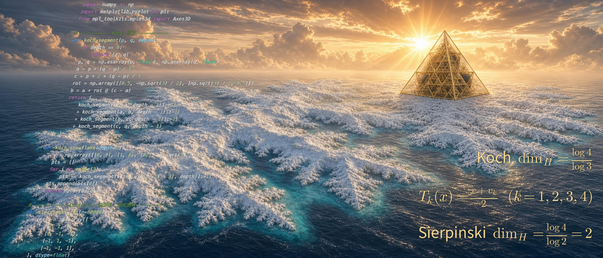
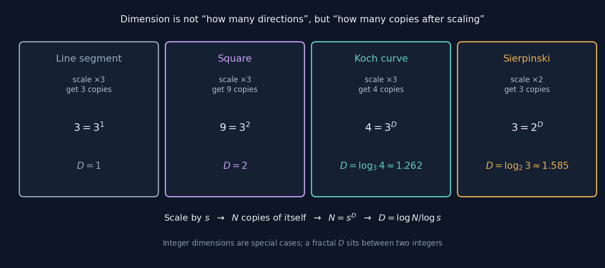

Fractals & Dimension
A line is one-dimensional, a sheet of paper is two. So how many dimensions does a snowflake have?

There are actually two fractals in the image above: the jagged, coastline-like outline is the Koch curve, and the hollow pyramid in the distance is a Sierpinski tetrahedron — each step splits a tetrahedron into four smaller ones at its corners, hollows out the middle, and repeats forever.
Their dimensions are $1.262$ and $2$. The Koch curve is stuck between one dimension and two; the Sierpinski tetrahedron is actually the exception — even though it's riddled with holes and its volume tends to zero, its self-similar dimension works out to exactly integer 2. Together these two facts make a point: dimension isn't "a fraction whenever something looks complicated" — you have to sit down and compute it.
Dimension: how many copies after zooming in
The word "dimension" gets used pretty loosely day to day — up, down, left, right, forward, back, three directions, three dimensions. But that story gets stuck the moment you hit the Koch curve: it's drawn on a flat sheet of paper, it's rough everywhere, its length is infinite while its area is zero. Calling it one-dimensional is too little; calling it two is too much.
Ask the question a different way and it clears right up: zoom in on the shape by a factor of $s$ — how many copies of itself does it become?

Zoom a line segment by 3 and you get 3 copies, $D=1$; zoom a square by 3 and you get 9 copies, $D=2$ — integer dimension is just a special case of this formula. Zoom the Koch curve by 3 and you get 4 copies, $D=\log_3 4\approx1.262$ — stuck between one dimension and two.
What this number is actually saying
$1.262$ means: it takes up more "room" than a straight line, but still doesn't fill a plane. Dimension here stops meaning "how many directions" and becomes a scale for measuring roughness — coastlines, blood vessels, lightning bolts, stock price charts can all be measured with it.
A second thread: measure
Dimension asks "how rough is it." Measure asks a more basic question: how big is this set? Length, area, volume, probability — all measures.
Sounds mundane, but it leads somewhere deeply counterintuitive. The construction below is called a Perron tree: slice a triangle into $2^n$ thin strips, then shift them so they overlap each other.
The area can be squeezed to any size you like — the overlap eats away at the union's area
Yet not a single direction is lost — every strip is only translated, its orientation never changes
So you end up with a set whose area is almost zero, yet which contains every possible direction. This is exactly the heart of the Kakeya problem: a needle spinning through a full rotation in the plane can sweep out an area as small as you like.
Where the two threads converge
How does the Perron tree's union area actually get computed? Draw every small triangle onto an offscreen canvas and count what fraction of pixels got coloured. That's exactly the same idea as box-counting to estimate a fractal dimension — take a ruler with markings, measure with it, and watch how the reading changes as the markings get finer. Measure and dimension, at bottom, are just two different ways of asking "how do you measure a set with a ruler."
Four ideas
Self-Similarity
- What it is
- Zoom in on a piece and it looks the same as the whole.
- How to build one
- Write one rule, then apply it to itself over and over. The Koch curve's rule is a single sentence: push the middle third of every segment out into a point. Each extra level of recursion adds one more layer of detail.
- Where it sits
- Strictly self-similar fractals (Koch, Sierpinski) can be described by an iterated function system — every step is a matrix transformation plus a translation, exactly the same machinery from the matrices section, applied again and again.
- Approximate self-similarity
- Fractals in nature (coastlines, clouds, tree branches) are only self-similar in a statistical sense — zoomed in, they "resemble" but don't "equal" the whole.
Fractal Dimension
- What it is
- $D=\dfrac{\log N}{\log s}$ — zoom by $s$, get $N$ copies of itself.
- What it measures
- Roughness, and the capacity to fill space. The closer $D$ gets to 2, the more this curve "wants" to fill the plane.
- Measuring a real object
- Box-counting: cover the shape with a grid of side length $\varepsilon$, count how many boxes $N(\varepsilon)$ are needed, and look at the slope of $\log N$ against $\log(1/\varepsilon)$. Britain's coastline comes out around $1.25$, Norway's fjords around $1.52$.
- Why a shorter ruler gives a longer coastline
- Because $D>1$. The measured length diverges as the ruler shrinks, so "how long is the coastline" doesn't actually have a fixed answer to begin with.
Measure
- What it is
- A rule assigning a "size" to a set. Length, area, volume, and probability are all measures.
- Basic requirements
- Non-negative; the empty set has measure zero; disjoint sets can have their sizes added together. Sounds mundane, but that last rule is exactly what makes the concept of "area" stand on solid ground.
- Where it sits
- Integration is built on top of measure — the $dx$ in "add up $f\,dx$" from the calculus section is, strictly speaking, a measure.
- Measure-zero sets
- Sets with zero area but infinitely many points. This is exactly what a Perron tree approaches: it holds almost nothing, yet holds every direction.
Recursion
- What it is
- A function that calls itself, until it hits a base case and returns.
- Its role in fractals
- A fractal's definition is naturally recursive, so the code stays remarkably short. The core of the image above is barely a dozen lines — the complexity lives in the picture, not the code.
- The cost
- The number of primitives grows exponentially with depth. Each extra level multiplies the Koch curve's segment count by 4, and the Sierpinski triangle's by 3. Push the level all the way up in the demo and the browser visibly struggles.
- Getting the base case wrong
- Infinite recursion, stack overflow. The single most common mistake when writing fractal code.
One sentence
Integer dimension is the exception, not the rule.
Almost nothing in nature is smooth — clouds aren't spheres, mountains aren't cones, coastlines aren't circular arcs.
What fractal geometry does is find a usable ruler for all this "irregularity."